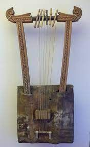
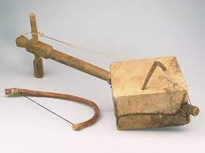
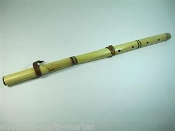
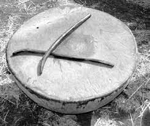

የሙዚቃ መሳሪያዎች
አብዛኛዉ የኢትዮጵያ ከፍተኛ ቦታዎች አካባቢ የክር የሙዚቃ መሳርያዎችን ይጠቀማሉ፡፡
የክር የሙዚቃ መሳርያ ክሮችን በመወጠር ይዘጋጃሉ፡፡ ክሮቹ በመርገብገብ ድምጽን በመፍጥር ተጫዋቹ የተለያዩ ዘማዎችን እንዲጫዎቱ የሚያስችል የሙዚቃ መሳርያ ነዉ፡፡
አሁን የተለያዩ ባህላዊ የሙዚቃ መሳሪያዎችን እናያለን፡፡
ክራር |
ማሲንቆ |
- ከ5-6 ከሮች አሉት
- እንደ ጊታር ወይም ቫዮሊን ይመስላል
- ከዋህሽንትና ከማሲንቆ ጋር ጥሩ ዜማን ይፈጥራል

|
አንድ(ነጠላ) ክር አለው
የራሱ መምቻ አለው

|
| ዋሽንት |
ከበሮ |
- ከባምቡ የተክል አይነት ይሰራል
- እንደ ትራምፔት ይመስላል
- ጥሩ ድምጽን ለማውጣት በላዩ ላይ ቀዳዳዎች አሉት

|
- በኦርቶዶክስ ቤተክርስትያን ዉስጥ ይዘወተራል
- እንደ ድራም ይመስላል
|
| ነጋሪት |
- ተለቅ ያለ ከበሮ መሰል ነው
- ጫፉ ጋር ሰበር ባለ እንጨት የመታል
- በንጉሳዊያን እና በቤተክርስትያን ስነስረአት እንጠቅምበታለን
- ለነጋሪት ጎሰመ እንላለን

|